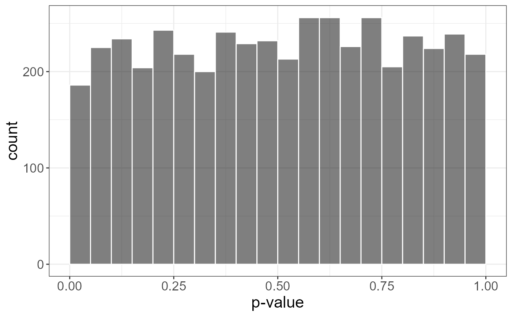
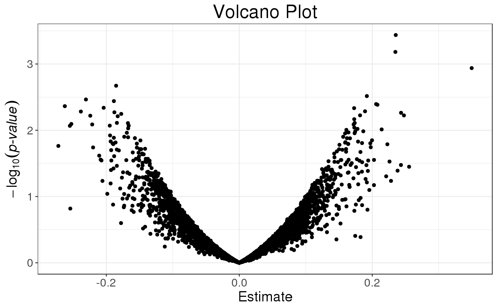

big_univLinReg.RdSlopes of column-wise linear regressions of each column of a Filebacked Big Matrix, with some other associated statistics. Covariates can be added to correct for confounders.
big_univLinReg(X, y.train, ind.train = rows_along(X), ind.col = cols_along(X), covar.train = NULL, thr.eigval = 1e-04, ncores = 1)
| X | A FBM. |
|---|---|
| y.train | Vector of responses, corresponding to |
| ind.train | An optional vector of the row indices that are used, for the training part. If not specified, all rows are used. Don't use negative indices. |
| ind.col | An optional vector of the column indices that are used. If not specified, all columns are used. Don't use negative indices. |
| covar.train | Matrix of covariables to be added in each model to correct
for confounders (e.g. the scores of PCA), corresponding to |
| thr.eigval | Threshold to remove "insignificant" singular vectors.
Default is |
| ncores | Number of cores used. Default doesn't use parallelism. You may use nb_cores. |
A data.frame with 3 elements:
the slopes of each regression,
the standard errors of each slope,
the t-scores associated with each slope.
This is also an object of class mhtest. See methods(class = "mhtest").
set.seed(1) X <- big_attachExtdata() n <- nrow(X) y <- rnorm(n) covar <- matrix(rnorm(n * 3), n) X1 <- X[, 1] # only first column of the Filebacked Big Matrix # Without covar test <- big_univLinReg(X, y) ## New class `mhtest` class(test)#> [1] "mhtest" "data.frame"#> function (x) .Primitive("abs")#> function (xtr) #> { #> lpval <- stats::pt(xtr, df = 515, lower.tail = FALSE, log.p = TRUE) #> (log(2) + lpval)/log(10) #> } #> <environment: 0xb57a7d0>#> Classes ‘mhtest’ and 'data.frame': 4542 obs. of 4 variables: #> $ estim : num -0.0311 0.0956 -0.0961 0.0327 -0.0246 ... #> $ std.err: num 0.0658 0.0783 0.071 0.08 0.062 ... #> $ score : num -0.473 1.221 -1.353 0.408 -0.397 ... #> $ p.value: num 0.636 0.223 0.177 0.683 0.692 ... #> - attr(*, "transfo")=function (x) #> - attr(*, "predict")=function (xtr)#> Estimate Std. Error t value Pr(>|t|) #> -0.03111113 0.06575485 -0.47313823 0.63631503#> Classes ‘mhtest’ and 'data.frame': 4542 obs. of 3 variables: #> $ estim : num -0.0295 0.0994 -0.0939 0.035 -0.0217 ... #> $ std.err: num 0.066 0.0785 0.0714 0.0803 0.0625 ... #> $ score : num -0.447 1.266 -1.316 0.436 -0.347 ... #> - attr(*, "transfo")=function (x) #> - attr(*, "predict")=function (xtr)#> Estimate Std. Error t value Pr(>|t|) #> -0.02947921 0.06597253 -0.44684070 0.65517903# With only half of the data ind.train <- sort(sample(n, n/2)) str(big_univLinReg(X, y[ind.train], covar.train = covar[ind.train, ], ind.train = ind.train))#> Classes ‘mhtest’ and 'data.frame': 4542 obs. of 3 variables: #> $ estim : num -0.0861 0.0511 -0.0907 0.0461 -0.0931 ... #> $ std.err: num 0.0902 0.1126 0.0991 0.1104 0.0868 ... #> $ score : num -0.955 0.454 -0.915 0.417 -1.072 ... #> - attr(*, "transfo")=function (x) #> - attr(*, "predict")=function (xtr)#> Estimate Std. Error t value Pr(>|t|) #> -0.08612891 0.09019549 -0.95491370 0.34053284